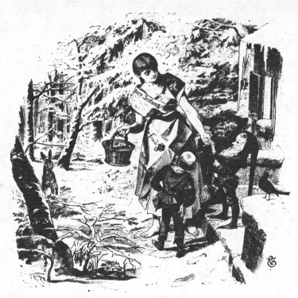

むかし、あるところに、おかみさんに
ある日、ふたりはいっしょに
「いいかい、あんたのおとうさんにこういっておくれ。わたしが、おとうさんのおよめさんになりたいってね。そうすりゃ、あんたにはまい朝
むすめはうちへかえって、女のいったことを、そのままおとうさんに話しました。すると、おとうさんはいいました。
「どうしたもんだろう。よめをもらうのはうれしいことだが、そのかわり、
おとうさんは、どっちとも心をきめかねましたので、とうとう、じぶんの長ぐつをぬいで、いいました。
「この長ぐつをもってくれ。こいつには
むすめは、いいつけられたとおりにしました。ところが、水のために
むすめは、おとうさんにこのことを話しました。おとうさんがじぶんでそこへのぼっていってみますと、たしかにむすめのいうとおりです。そこで、さっそくその
こうして、
つぎの朝、ふたりのむすめがおきてみますと、男のほうのむすめのまえには、顔をあらう
女は、ままむすめが、ヘビかサソリのように、にくくてなりません。なんとかして日ましにひどくいじめてやろうと、そんなことばかり考えていました。それに、ままむすめは美しくてかわいらしいのに、じぶんのほんとうのむすめときたら、それこそみにくくて、ぞっとするほどでしたから、なおさらねたましくてならなかったのです。
ある冬の日のことでした。
「さあ、この
「まあ、おかあさん。」
と、むすめはいいました。
「こんな冬に、イチゴなんかありゃしませんわ。地面はこおっていますし、おまけに雪がすっかりつもっていますもの。それに、どうしてこんな紙の着物をきていかなければいけないんですの。おもては、
「また口ごたえをする気かい。」
と、まま母がいいました。
「さっさといっといで。このかごにイチゴがいっぱいになるまでは、二度ともどってくるんじゃないよ。」
それから、まま母はかたいパンをひときれわたして、
「これだけあれば、一日は食べられるよ。」
と、いいました。でも心のなかでは、
（そとへでれば、こごえて、うえ
と、思っていました。
むすめはおとなしくいうことをきいて、紙の
むすめが森のなかにはいっていきますと、一
それを見て、
「ぼくたちにもすこしくださいな。」
「あげますとも。」
むすめはこういって、パンをふたつにわって、
「この冬のまっさいちゅうに、きみはそんなうすい
と、
「それがねえ、このかごにいっぱいイチゴをさがさなけりゃならないのよ。」
と、むすめがこたえていいました。
「イチゴをもっていかなくっちゃ、うちへもかえれないのよ。」
むすめがパンを食べおわりますと、小人たちはむすめにほうきをわたして、いいました。
「これでうら口のところの雪をはいておくれ。」
むすめがそとへでてしまいますと、そのあとで、三人の
「あのむすめは、あんなにおとなしくして、しんせつで、それに、パンもぼくたちにわけてくれたんだ。なにをやったらいいだろうなあ。」
すると、ひとりがいいました。
「ぼくは、あのむすめが日ましに美しくなるようにしてやろう。」
二ばんめの小人がいいました。
「ぼくは、あのむすめが口をきくたびに、口から
三ばんめの小人はこういいました。
「ぼくは、どこかの王さまがやってきて、あのむすめをお
むすめは、

むすめは大よろこびで、さっそくイチゴをかごにいっぱいつみとりました。そして、小人たちにお
むすめがうちのなかにはいって、ただいま、といったとたんに、
「見てやってよ、あの
と、まま母のつれてきたむすめが大きな声でいいました。
「あんなにお
けれども、心のなかでは、ほんとうはそれがうらやましくてたまらず、じぶんも森へいって、イチゴをさがしてこようと思っていたのです。
「およしよ、おまえ。こんなに寒くっちゃ、こごえちまうよ。」
と、まま母はいいました。
けれども、むすめがあんまりうるさくせめたてるものですから、とうとうまま母もまけてしまって、りっぱな
むすめは森へはいって、まっすぐ、あの小さなうちをめざして歩いていきました。こんどもまた、三人の
「ぼくたちにも、すこしくださいな。」
と、
「あたしひとりでもたりないんだよ。ひとになんか、わけてやれるもんですか。」
と、こたえました。
まもなく、むすめがパンを食べおわりますと、小人たちがまたいいました。
「そのほうきで、うら口のそとのところをきれいにはいておくれ。」
「なにいってんのよ、じぶんたちでおはき。あたしはおまえたちの
と、むすめはこたえました。
むすめは、小人たちがなんにもくれそうにないと見てとりますと、戸口からそとへでていきました。すると、小人たちは
「あのむすめはあんなにぎょうぎがわるいし、ひとにものもやらない
すると、ひとりがいいました。
「ぼくは、あのむすめが日ごとにみにくくなるようにしてやろう。」
二ばんめの小人がいいました。
「ぼくは、あのむすめが口をきくたびに、口のなかからヒキガエルがとびだすようにしてやろう。」
さいごの
「ぼくは、あのむすめがみじめな
むすめはそとでイチゴをさがしましたが、ひとつも見つかりませんので、ぷんぷんおこって、うちにかえりました。そして、口をひらいて、森でおこったできごとをおかあさんに話そうとしました。ところが、ひとこというたびに、ヒキガエルが一ぴきずつ口のなかからとびだしてきました。そのため、みんなは、このむすめをたいそういやがるようになりました。
こんなことがありますと、まま母はますます
とうとう、まま母はおかまをもちだして、火にかけました。そして、より
「これをもって
と、いいつけました。
むすめはおとなしくいわれたとおりに川へいって、氷に穴をあけました。こうして、むすめが氷をわっているさいちゅうに、王さまののっているりっぱな
「おまえはだれだね。そこでなにをしているのかね。」
「あたくしはあわれなむすめでございまして、より糸をすすいでいるところでございます。」
これをきいて、王さまはむすめをかわいそうに思いました。しかも、見れば、たとえようもないほど美しいむすめです。
そこで、王さまはいいました。
「わしといっしょにいく気はないかね。」
「ええ、よろこんでおともいたします。」
と、むすめはこたえました。むすめにとっては、まま母や
そこで、むすめは馬車にのって、王さまといっしょにいきました。やがて、お
それから一年たって、わかいお
ところが、ある日、王さまがよそへいって、ほかにはだれもいないときのことでした。このわるものの女は、お
そうしておいて、こんどは、みにくい顔のむすめが
王さまがかえってきて、お
「おしずかに、おしずかに。ただいまは、お話しなさってはいけません。ひどい
王さまは、わるだくみがあろうなどとは
ところが、王さまがお妃さまと話をして、お妃さまがそれにこたえますと、ひとことこたえるごとに、まえには
「これはどうしたことなのか。」
と、たずねました。
するとまま母は、
「これはひどい
と、もうしました。
ところがその
王さま あなたはなにしていらっしゃる
おやすみですか おめざめですか
わかいものがなんともへんじをしませんので、カモがまたいいました。おやすみですか おめざめですか
あたしのお客 はなにしているの？
それをきいて、わかいものがこたえました。お客はぐっすりねているよ
すると、カモがなおもききました。あたしのぼうやはなにしているの？
わかいものはこたえていいました。ゆりかごで すやすやねているよ
すると、カモはおこんなふうにして、カモはふた
「王さまのところへいって、こういってくださいな。王さまが
そこで、料理番のわかいものは王さまのところへ走っていって、このことを話しました。すると、王さまは
と、三度めをふりおわったとたんに、お
王さまは、心のそこからよろこびました。けれども、赤ちゃんが
「ひとを
「そんなわるいやつは――」
と、まま母がこたえていいました。
「たるのなかにおしこめて、それをくぎづけにして、山の上から川のなかにころがしおとすのがいちばんでございますよ。」
それをきいて、王さまはいいました。
「おまえはじぶんをさばいたわけじゃ。」
そうして、そういうたるをもってこさせて、まま母とむすめとをそのなかにいれさせてしまいました。それから、たるのふたをくぎづけにして、山の上からゴロゴロころがしおとしましたので、とうとうたるは川のなかへころがりこんでしまいました。